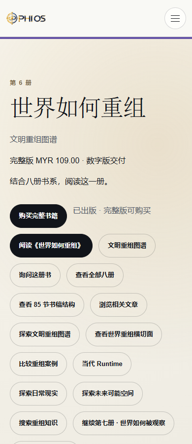

这是构建候选，不是部署或商业激活。基础提交 df56c57b9272365d2e221406fd9cc9cdd8407235；隔离工作树 C:\Users\Guest Account\.codex\worktrees\pages-final-candidate\phios。
纳入两项已接受的 R4.2 产品修正及对应 checker：assets/js/knowledge/book-public-samples.js；content/web-production/registries/book-public-samples-v1.json；scripts/check-integrated-r42.mjs。本机 Ask 页 un check、另一脚本 ck 前缀、P9 和历史审阅改动原样保留，不纳入。
B6 检查允许同一 locale owner 的多个 named imports，仍要求导入 t、实际调用 t，并执行双语 DOM/视觉检查；补齐 Node DOM 的 dispatchEvent，断言真实 BOOK-6 交接。wrangler 根 vars 仅增加 READ_ONLY，所有 D1/R2/Service/preview 配置及四个 false 开关不变。
| 命令 | 退出 |
|---|---|
| npm ci --include=dev --include=optional --no-audit --no-fund | 0 |
| npm run build:pages | 0 |
| npm run check:pages-build | 0 |
Node 22.16.0 / npm 10.9.2；锁定依赖 ci 安装成功。源码 mock 8，实际编译 Worker 8，中英文预览各 4。READ_ONLY 预期拒绝处境 POST；不把关闭的写入功能算交付成功。
{
"source": "3bb4619dc2d7272a495baeb4daa139ae3ca0f50af602d6043842bda386a92cde",
"worker": "eb2d310e4f90265afcdd6a7d137e5165ccc3ab376dfad219ceac126d17b2929a",
"routes": "3a87caf0402e11632cb4fd51c8a081aa4a848bd78cd3b0c8cee11199d65f3381",
"config": "468092ba45d6c21e8fa7f3442b5321ced85fd4e0a47fda014ed9932c9cdb8c59",
"manifest": "fbe00167ee3bfe3fb59d642dba50a20f268d6b02268f5b0cf0b45e1324246f4a",
"files": 11725,
"lockfile": "51a2c52b8cb18f4e1b8254659d3bc1fbbd03b91ba8e1360ded610b15e9eddd9f"
}逐文件摘要 · 预览后复核 · 编译产物 8 项验证 · 英文浏览器证据 · 中文浏览器证据 · 首轮原始失败
本地 Ask · 本地第六册。ASSETS 来自最终 .pages-output；D1/R2/Service/AI 全部使用隔离测试桩，公开图片基址为本地非秘密配置。

短时／懒加载远程图片未完成核验，保留 NOT_VERIFIED，不写缺失或显示通过。当前 Runtime 等旧界面用词列为非阻塞后续事项。不声称全站客户业务完成；未重新执行 T9、Token 或历史部署审查。
一次性手动命令及回滚草案（未执行）。锁定 Wrangler 无 Pages rollback CLI；历史 8ceb88f8… 仅保留为候选回滚目标，正式发布前核实其 Worker／配置配套状态。0164cad3… 清理独立保留。
LOCAL：限定验证通过；BUILD：通过；DEPLOYMENT：未执行；LIVE：未执行。provider / 生产写入 / payment / deploy / commit / push / 远程 DELETE 均为 0。